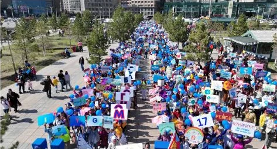
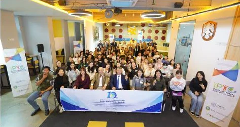
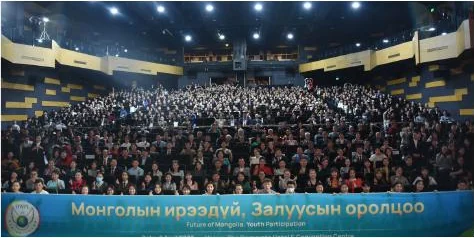
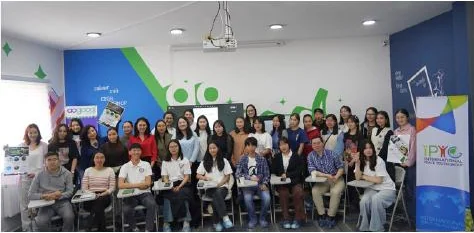
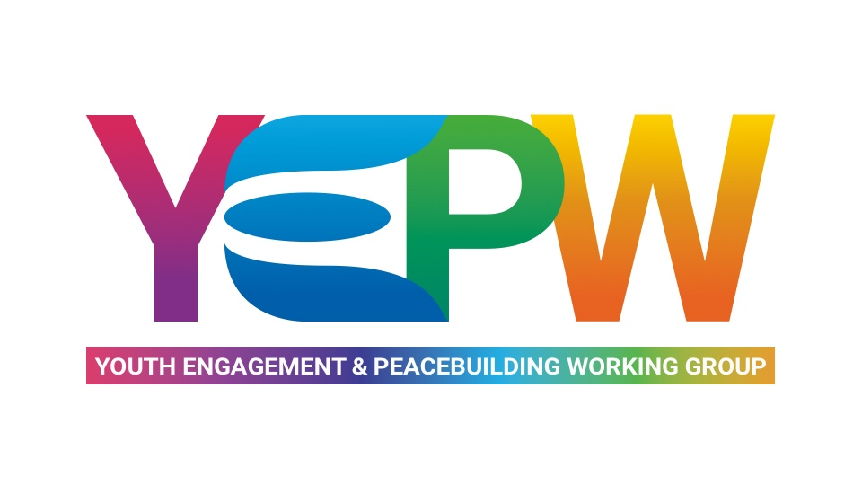

Чадавхжих
Өөрсдөө бие даан хариуцлагатайгаар ажиллах үед чадварыг өөртөө суулгана

Жил бүрийн 5-р сарын 25-нд IPYG нийгэмлэгтэй хамтран ажилладаг байгууллагууд дэлхийн өнцөг булан бүрт “Дэлхийн энх тайвны тунхаг” тунхаглагдсан өдрийг тэмдэглэн, Энх тайвны алхалтад оролцдог. Энэхүү арга хэмжээ нь дайныг зогсоох олон улсын эрх зүйг бий болгохыг сурталчлах зорилготой юм.

Жил бүрийн 9-р сарын 18-нд дэлхийн өнцөг булан бүрээс хамтрагч байгууллагууд, салбар бүрийн төлөөлөл, шийдвэр гаргагчид HWPL байгууллагын эрэлхийлж буй энх тайванд хүрэх арга замыг батжуулахаар “Дэлхийн энх тайвны дээд хэмжээний чуулга уулзалт”-д оролцдог. Мөн төлөөлөгчид өөрсдийн хэрэгжүүлж буй энх тайвны санал санаачилга, ололт амжилт болон цаашдын төлөвлөгөөг танилцуулдаг.

Залуучуудын харилцаа, хандлагыг сайжруулан, чадавхжуулах нь эргээд нийгэмд асар том эерэг өөрчлөлтийг бий болгодог. Иймээс бид нийгэмд илэрч гардаг асуудлуудын хүрээнд бие сэтгэлийн эрүүл мэндийг хангах, хувь хүний хөгжлийг төлөвшүүлэх, даяарчлагдсан нийгэмд хэрхэн дэлхийн иргэн болж зөрчилдөөнгүйгээр зэрэгцэн амьдрах зэрэг өргөн агуулгаар ЮНЕСКО-гийн “Насан туршийн боловсрол”-ын зорилгыг хэрэгжүүлэхэд хувь нэмрээ оруулж, Тогтвортой хөгжлийн 4 дэх зорилго болох чанартай боловсролыг дэмжихийн төлөө танхим болон цахим хэлбэрээр сургалтыг явуулж байна.
Залуучууд академик боловсролоос гадна бодит амьдрал нийгмийн харилцаан дээр үүсдэг асуудлууд хэрхэн хандах талаар мэдлэгтэй болж өөрийнхөө болон бусдын нийгмийн эрүүл мэндэд санаа тавьдаг төлөвшсөн иргэн болох.
“Өв уламжлал гэдэг нь зүгээр нэг өнгөрсөн үе биш, харин бидний өнөөдөр, ирээдүйтэй холбоотой амьд үнэт зүйл юм байна гэж бодогдлоо.”
“Бид бол ирээдүйн өв соёлыг дамжуулах гүүр юм. Үр хойчдоо өв соёлоо сайн дамжуулах хэрэгтэй гэдгийг ойлголоо.”
“Аливаа улс үндэстэн ба шашин шүтлэг нь маш олон соёлыг өөртөө шингээж байдаг юм байна. Тэдгээр шашин бүр өөрийн гэсэн хэв маягтай. Харин бид ижил тэгш хүндэтгэлтэй хандах ёстой гэдгийг ойлголоо.”
“Ингэж долоо хоног болгон хичээлдээ суух болгондоо бага багаар мэдлэг хуримтлуулж, өөрийгөө ямар чухал, үнэ цэнтэй сургалтад сууж байгаагаа ухаарч байна шүү.”
“Өнөөдрийн хичээл надад үнэхээр сэтгэл хөдөлгөм байлаа. Уйлуулсан, ухааруулсан, өөрийн минь үнэ цэнийг мэдрүүлсэн маш чухал хичээл боллоо.”
“Уучлал гэдэг нь маш том зүйл гэдгийг ойлгосон. Өөрийнхөө мэдрэмжийг тодорхойлж, өөрийн мэдрэмжээ сайн илэрхийлж ярилцах ёстойг ойлгосон.”
“Гэхдээ 2 хичээлийн дараа би ядаж өөрийн хүрээлэлдээ жижиг ч гэсэн өөрчлөлт хийж чадах юм шиг санагдаж байна.”
“Бид улсыхаа хөгжлийг гоочилж, дандаа болохгүй талаас нь хардаг ч өөрчлөлт гэж алхам хийдэггүй юм байна гэсэн бодол төрлөө.”


Энэхүү ажлын хэсэг нь IPYG-н гишүүн орнуудын үндэсний болон бүс нутгийн хэмжээнд тогтмол явагддаг. YEPW нь ард иргэдийн амар тайван, аюулгүй байдалд сөргөөр нөлөөлж буй нийгмийн олон асуудлыг шийдвэрлэхэд салбар бүрийн оролцоог хангаж, залуучууд өөрсдөө гарц шийдэл олж түүнийгээ бодит ажил хэрэг болгох зорилготой юм.
Өөрсдөө бие даан хариуцлагатайгаар ажиллах үед чадварыг өөртөө суулгана
Аливаад баримтанд тулгуурлан үндэслэлтэй хандаж бодох; гарц, шийдлийг эрэлхийлдэг шүүмжлэлт сэтгэлгээг бий болгоно
Өөр өөр үзэл бодолтой залуус нэгдэн харилцан ойлголцож, багаар ажиллан хамтын шийдвэрийг гаргана
Залуучууд аливаад өөрсдөө гар бие оролцохын үнэ цэнийг ухамсарлаж, нийгмийнхээ төлөө, өөрсдийн ирээдүйн төлөө хүмүүнлэг, чадварлаг иргэн байх ёстойгоо ухамсарлах